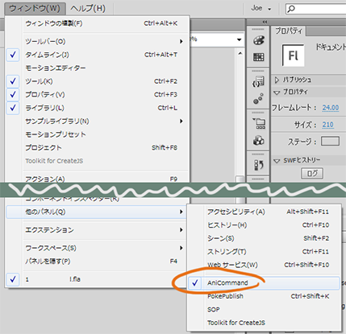
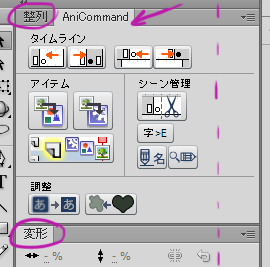

Prev Keyframe 前のキーフラム
Prev Keyframe 前のキーフラムThe AniCommand panel is part of the PokeAniToolbox. Download the installer. Remember to set your remote FTP folder once installed. The installer will open this setting for you.
The panel is accessible under Flash's menus: Window -> Other Panels -> AniCommand.
Once installed, restart Flash. The window is the same size as the alignment and transform windows (整列 & 変形), so I recommend docking it there.
All commands are also available under the Command menu. Because of this, you can also assign them to keyboard shortcuts.
Prev Keyframe 前のキーフラム Next Keyframe 次のキーフラム
Next Keyframe 次のキーフラム Prev Keyframe (Any layer)
Prev Keyframe (Any layer) Next Keyframe (Any layer)
Next Keyframe (Any layer) Encapsulate in Graphic
Encapsulate in Graphic Encapsulate in Movie Clip
Encapsulate in Movie Clip Plop to Layer 新しいレイヤーに入れる
Plop to Layer 新しいレイヤーに入れる Trim Ends 超過分を切り調える
Trim Ends 超過分を切り調える UnJapanese 和英文字変換
UnJapanese 和英文字変換 Library Name Replace
Library Name Replace Pixalign ピクセルグリッドに合わせる
Pixalign ピクセルグリッドに合わせる Swap Elements オブジェクト取り替え
Swap Elements オブジェクト取り替え